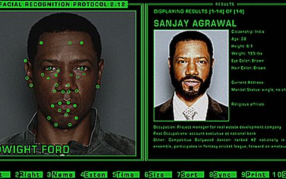
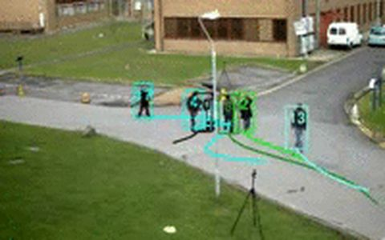
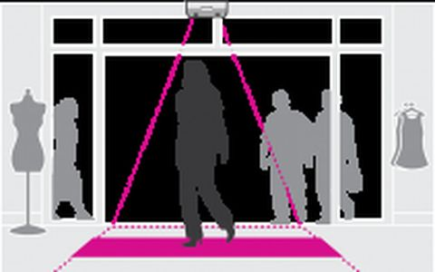
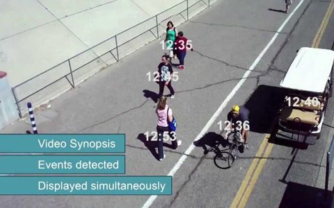

Experiment 1 · the judge
Venture evaluation agent
Models a business deeply — returns its viable shapes, not a verdict.
In VLM systems shipped worldwide, we trained with focused synthetic data: models improved drastically in the target direction — without catastrophic forgetting, the classic failure of narrow fine-tuning.


team


Together since IIT Delhi, 2006.
Appendix · founder profiles


field systems — face recognition · iris · inline QA · toll automation
Appendix · founder profiles



field systems — aerial detection · tracking · counting · video synopsis
Appendix · founder profiles